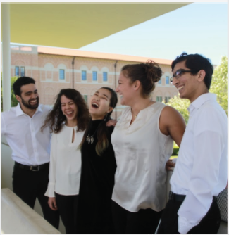

MEET THE ADVISORS

Advisor
Lovett '21 | Physics | San Antonio, TX
So, Matthew Burns is your advisor. Enter the world of powerlifting, mountain-biking, and tight red pants. If you can’t tell from his pictures, Burns is quite a ‘rowdy’ guy. Burns is one of the most sociable, friendly, quick-witted Physics majors you will ever meet. He keeps himself busy trimming his beard, doing research in a biology lab, and working various jobs on campus which means he will add a very mature presence to your O-week group.
When he’s not grinding out a nasty integral or tinkering over a particle accelerator, you can find him in the Commons joking around, or complaining about his least favorite mammal, the blue whale, with fellow Loveteers. Burns remains heavily involved in Lovett culture as a member of the esteemed Lovett Bike Team (#NeverLast) and always seems to be around. On the surface, Burns looks like he could be a J. Crew model, but deep down he’s as much of a teddy bear as his thick beard would suggest. Burns is always willing to lend a helping hand or listen to you— not to mention he’s always down for a game of pool.
Long story short, you’ve hit the jackpot when it comes to O-week Dads Into Lifting and Flexing.
- Alex Pollatos, Henry Creamer, and Matt Schulze (Lovett '21)
Advisor
Lovett '19 | Pre-Med | Houston, TX
Get ready to meet your nature-loving, yoga-doing, concert-going, Advisor! Arlen Suárez, a senior from Lovett College, might possibly
be one of the most eclectic individuals you will ever meet. When she is not musing about the philosophical premise of the universe or
the discrepancies in the current legal system, she is probably focusing on being pre-med, stressing over her next Biochemistry and Cell
Biology exam, or listening to music at a concert. A native Houstonian, she actively seeks new places or things to do in Houston. Though
her efforts are curtailed due to her ridiculously busy schedule in school, Arlen somehow manages to do the impossible task of being in
some leadership position in almost every club you could imagine. Just this year she was an officer in 3 clubs. Her love of learning about
new people and creating spaces of inclusion and diversity have led her to be co-president in both the Hispanic association (HACER)
and an interfaith organization on campus (The Boniuk Council). In spite of the seemly heroic endeavor of trying to be both a real
person and a pre-med, Arlen makes times for her friends and for cultivating great people relationships. All-in-all, you are in for a great
year with your Advisor!
- Arlen Suárez (Lovett '19)
Advisor
Lovett '20 | ELEC | Houston, TX
Hamza is a man of many unique attributes. This junior Electrical Engineering (ELEC) major from Houston is the only person I know
who has mastered the art of going to bed before midnight. Even though he is often busy studying to ace his ELEC classes or being late
to meetings, he is always down to spend time with you, whether that is balling at the gym at 10pm, playing ping pong, or just simply
having a nice chat. You can always find him hanging in the Commons eating a bowl of Cheerios for breakfast, lunch, and dinner. Also,
if you are a morning person, you can go to his unofficial office hours in the Commons at 7am to vent your frustrations about school,
careers, Naruto, or just life in general. But most importantly, he is super excited to be your O-Week Advisor! Hamza will always be there
for you to make things okay, and also be your personal hype man when you need him to be. Get pumped for an exciting and thrilling
week and year with Hamza, who will not only be your beloved Advisor, but also an amazing friend who will always have your back.
- Jayson Taylor and Kenneth Wang (Lovett '20)
Co-Advisor
Jones '19 | ECON,MANA,BUSI | Essen, Germany
What do Michael Phelps, Lance Armstrong, and Usain Bolt have in common? None of them are as athletic as Jones Fast Woman Rabea
Tzenetos. What’s her secret? She never fails to eat her fruits and veggies, she has a strict(ish) 9pm bedtime, and she ingests a minimum
of 495 mg of caffeine a day (that’s five cups of coffee!!). She may be a senior, but she’s got more youth and energy than the [Jones]
fountain of youth. To her teachers she’s an Economics, Managerial Studies, and Business minor student, to her coaches she’s a varsity
swimmer, and to everyone else she’s a close friend. Hailing from Essen, Rabea is more loyal and watchful than a German Shepard,
sweeter and more comforting than German chocolate cake, and the hills are truly alive with the sound of [her jammin’] music [playlist].
(Yes, I know that last reference is set in Austria but she did spend a year of secondary school in Austr[al]ia). In addition to all of these
first-class qualities, Rabea has a fantastic sense of humor and her jokes will never fail to rub you the right way. I promise that you won’t
just like having her as your Co-Advisor, you’ll Lovett!
- Amy Griffiths (Jones '19)
Photographer
Lovett '21 | POLI, SOCI | Caty, TX
Consider yourselves lucky to have Christina bless your lives with her amazingLEE talented photography. Hailing from Katy, TX
(though she’ll tell you she’s from Houston, but really still a New Jersey girl at heart) she’s Lovett’s local boba queen and knows how
to put her wardrobe together- which she insists is just a skill she inherited from her mom. Double majoring in Political Science and
Sociology, this sophomore pre-law will dance straight into your hearts and will treasure your souls dearly, like she does with the SA’s
budget as its Deputy Treasurer. Despite being a BNOC (Big Name on Campus), she will make time out of her busy schedule to
have a deep and meaningful 1:1 conversation with you. You can find this cheerful bundle of joy sipping on bubble tea, out on an
impromptu photoshoot, or lobbying for equal rights for everyone. She is also a part-time Vine reciter and a full-time cat lover, but
most importantly, a full-time friend.
- Erica Lee (Wiess '21)